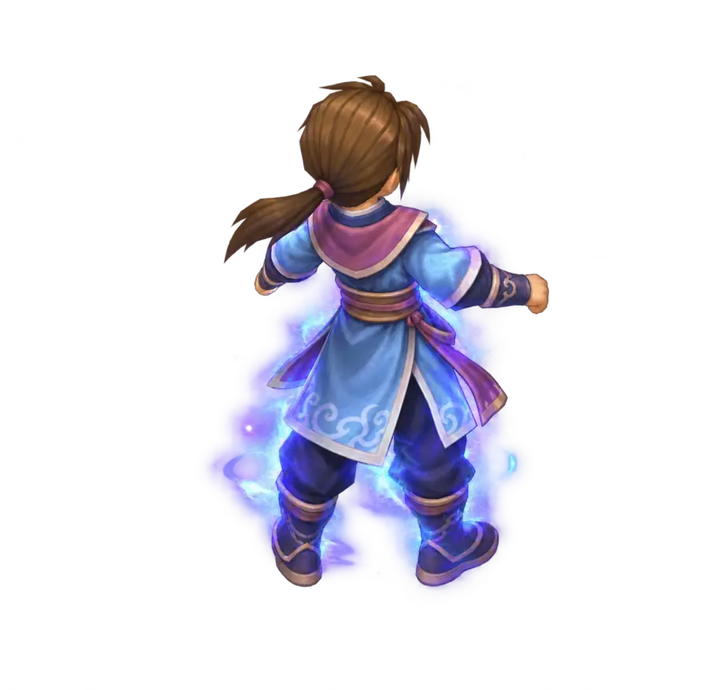

山海依舊・故人歸來
軒轅劍網路版
山海洪荒・再續前緣
旅人暱稱
啟程
訪客登入 ・ 開始旅程
繁體中文版 ｜ 單機重製版・進度儲存於此裝置
Remaster · 0.3.0
人物選擇
軒

軒轅旅人
人類 劍客 Lv. 1
廣靈鎮・新手旅程
進入遊戲
建立人物
創造人物
×
人物姓名
性別
男
女
種族
人類
修羅
仙靈
人類均衡，能習多門武學與五行法術。
職業
體力
12
智慧
12
魅力
12
體質
12
靈活
12
運氣
12
劍
軒轅旅人
人類
・
劍客
Lv.
1
生命
120 / 120
法力
80 / 80
施法
五雷咒
隊伍
1 / 5
軒轅旅人
同行俠士
凌水港
◎
▲
●
X: 142 Y: 087
港口嚮導
雜貨舖
軒轅幣
100
體
武
令
寶
Lv. 3
溪畔水鬼
×
100 / 100
你來到了凌水港。海霧中，遠處傳來微弱的妖聲。
旅程開始了。點擊地面移動，右鍵對目標行動。
附近
隊伍
世界
密語
送出
人物屬性
詳細
體力
12
智慧
12
魅力
12
體質
12
靈活
12
運氣
12
火
12
水
12
風
12
雷
12
陰陽
12
人
包
技
任
圖
坐
隊
設
◀
1 / 10
▶
跑
♪
就緒
人物狀態
×
左鍵點地移動 ・ 點擊怪物選取 ・ Q 普通攻擊 ・ 1–8 使用技能 ・ / sit 打坐 ・ Tab 地圖